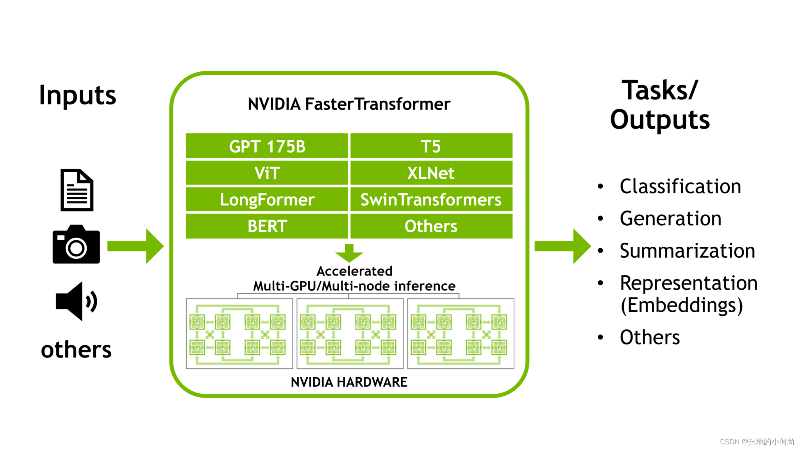
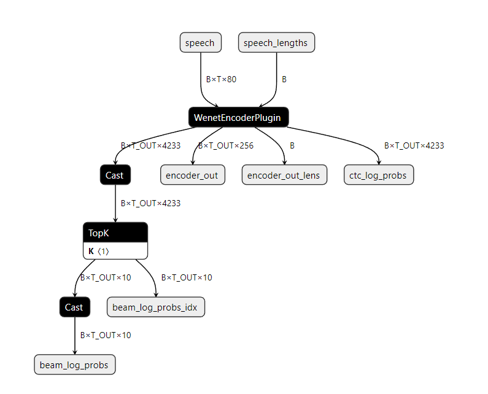

Fastertransformer
NVIDIA Faster Transformer是一个库，用于实现基于Transformer的神经网络推理的加速引擎，特别强调大型模型。Faster Transformer包含Transformer块的高度优化版本实现，其中包含编码器和解码器部分。它是由C++/CUDA编写，依赖于高度优化的cuBLAS、cuBLASLt和cuSPARSELt库，可以在GPU上构建最快的Transformer推理流程。
与深度学习训练的通用框架相比，FasterTransformer能够获得更快的推理管道，并且基于Transformer的神经网络具有更低的延迟和更高的吞吐量。

Triton推理服务器，具有多个后端，用于对使用不同框架训练的模型进行推理
带有FasterTransformer后端的Triton支持wenet、T5、swin、GPT等模型推理。

warmup
当Triton模型加载时，相应的backends会为该模型初始化。对于某些backends，部分初始化会被推迟到模型接收第一个推理请求（或前几个推理请求），因此前几个推理请求可能会明显变慢。
为了避免初始缓慢的推理请求，Triton提供配置项使模型能够“预热”，以便在接收第一个推理请求前完全初始化。在预热完成前，模型不会对外提供服务
FasterTransformer wenet tensorrt plugins
Encoder


Decoder


性能分析
| tensorrt_fastertransformer | ||||
|---|---|---|---|---|
| batch size(并发度=2) | 2 | 4 | 8 | 16 |
| 吞吐率(infer/s) | 46.4 | 81.6 | 91.2 | 99.2 |
| 平均时延(ms) | 86.192 | 98.015 | 174.612 | 318.608 |
| batch size(并发度=8) | 2 | 4 | 8 | 16 |
| 吞吐率(infer/s) | 75.6 | 87.2 | 89.6 | 96 |
| 平均时延(ms) | 212.723 | 358.374 | 736.458 | 1302.786 |
| ONNX_FP16 | ||||
| batch size(并发度=2) | 2 | 4 | 8 | 16 |
| 吞吐率(infer/s) | 33.2 | 44.8 | 41.6 | / |
| 平均时延(ms) | 120.744 | 183.461 | 363.058 | / |
| batch size(并发度=8) | 2 | 4 | 8 | 16 |
| 吞吐率(infer/s) | 30.8 | 42.4 | / | / |
| 平均时延(ms) | 516.526 | 767.964 | / | / |
CER：均为1.1368%
| 部署在Jetson NX | ||||
|---|---|---|---|---|
| batch size(并发度=2) | 2 | 4 | 8 | 16 |
| 吞吐率(infer/s) | 46.4 | 81.6 | 91.2 | 99.2 |
| 平均时延(ms) | 86.192 | 98.015 | 174.612 | 318.608 |
| batch size(并发度=8) | 2 | 4 | 8 | 16 |
| 吞吐率(infer/s) | 75.6 | 87.2 | 89.6 | 96 |
| 平均时延(ms) | 212.723 | 358.374 | 736.458 | 1302.786 |
| 部署在台式机 | ||||
|---|---|---|---|---|
| batch size(并发度=2) | 2 | 4 | 8 | 16 |
| 吞吐率(infer/s) | 488 | 641.6 | 771.2 | 851.2 |
| 平均时延(ms) | 8.193 | 12.474 | 20.712 | 37.604 |
| batch size(并发度=8) | 2 | 4 | 8 | 16 |
| 吞吐率(infer/s) | 698.8 | 919.2 | 1049.6 | 1179.2 |
| 平均时延(ms) | 22.890 | 34.808 | 53.477 | 108.696 |